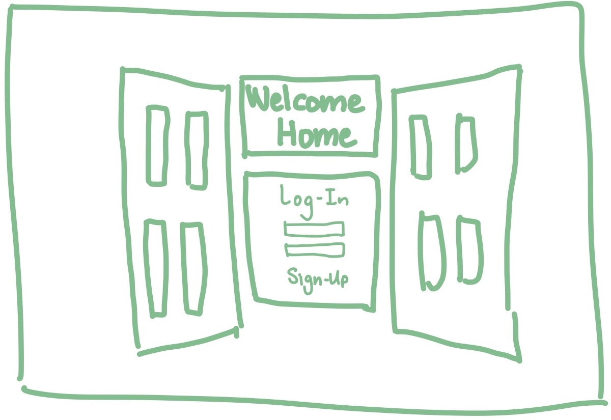
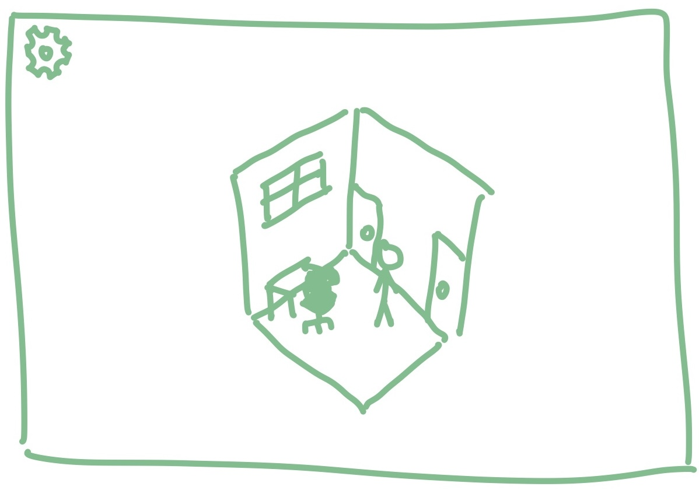
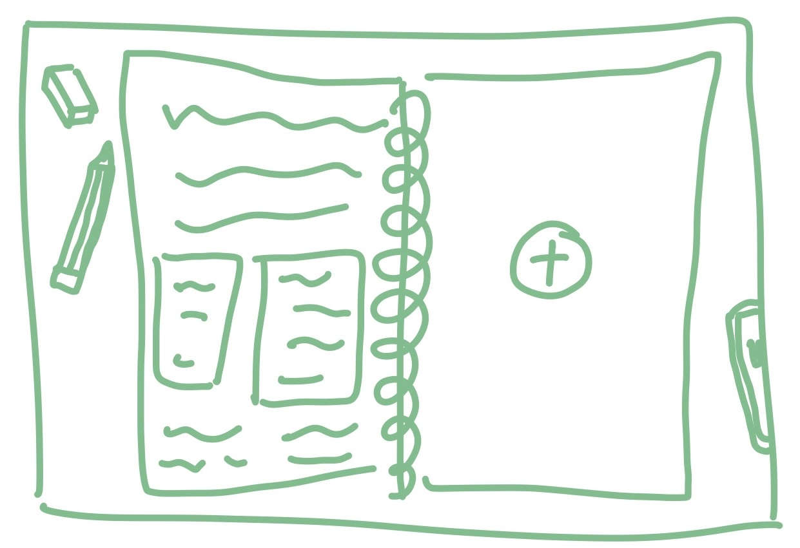

Overview
As busy college students, the assignments and responsibilities we carry on our shoulders can be a struggle to chip away at. Many find that utilizing organizational tools can make their mountain of to-do’s seem more manageable. Whether those tools are planners, calendars, electronic reminders, or “keeping it all in your head”, everybody has a method that works best for them. But oftentimes, even planning and organizing the tasks themselves can be and overwhelming. This web application aims to tackle the problem of disorganization and the mental toll it takes on an average college student. By providing multiple tools like custom planners, calendars, and browser-enabled notifications, any user should be able to utilize them to organize their assignments, plans, or to-do tasks. At the same time, the more fun aspects of this web-app like character creation, a mood tracker, and mindfulness space provides a virtual safe space where the user can decompress and enjoy some activities that can take their minds off the hardships of a long day.Application Parts
The customizable notebook, or planner, is an integral component of Welcome Home, intended to allow users to write down and store their plans, assignments, or to-do tasks. The customizability of the notebook encourages user engagement and personal organization. Users will have the option to organize their notes in sections, much like popular note-taking apps like Notion or OneNote. Additional features like bookmarking, highlighting, and sticky notes makes note-taking fun, easily accessible, and aesthetically pleasing. Additionally, completing tasks within the notebook will reward the user with things like treats for their in-game pet, an additional sticky-note design, or a new pen. This further game-ifies task completion. Welcome Home’s character creator will allow users to feel at home in their virtual space. Whether it be by recreating a mini-them or making another version of themselves, the creator will allow users to enter their space virtually. Since Welcome Home’s main focus is to create a low-stress environment by game-ifying tasks, the user’s character will act as the main “game component”. The creator will involve customization of an avatar’s hair, skin, clothes, and accessories. After character creation, the user will be allowed to enter their virtual space. Additionally, they can choose to update their avatar at any point by going to the wardrobe component. Character creation is completely up to the user and encourages user-freedom. Lastly, browser-enabled notifications will help keep users on track with deadlines or reminders that they input into their calendar. There will be an option within the settings to turn off these notifications to keep user-freedom accessible. There will be additional optional configurations that the user can modify. By default, the notifications will occur the day and hour before the deadline inputted by the user. However, they can choose to make it occur multiple times within the week up until a minute before the deadline. Again, these configurations allow complete user freedom.Data Requirements
To effectively support the functionality of our application, our backend database will store various types of data critical for seamless user experience and efficient operation. Among the key data categories, the first pertains to login data, encapsulating essential user profile information alongside authentication credentials. Each user entry includes a unique username, ensuring individuality within the platform, coupled with contact details such as email or phone number for communication/user verification purposes. Authentication credentials, such as passwords, will be stored as well. Task details represent another integral facet of our database, storing comprehensive information concerning each user-generated task. These entries encompass essential task attributes, including a title to succinctly describe the task, detailed descriptions for task specifics, and due dates/deadlines for completion. Moreover, users can categorize tasks by associating relevant tags or categories, facilitating organized task management and streamlined access. Task tracking ensures users maintain clarity and efficiency in their daily endeavors, fostering productivity and goal attainment. Similarly, calendar events constitute a pivotal component within our database, mirroring the structure and attributes of tasks but tailored to accommodate event-related information. Each calendar event entry encompasses essential details such as event titles for easy identification, precise date and time specifications, location information to facilitate navigation, and comprehensive event descriptions elucidating pertinent details. Additionally, users can opt to set reminders for calendar events, ensuring timely notifications and proactive management, further enhancing user convenience and punctuality. Character attributes serve as a unique feature within our application, allowing users to personalize their avatars through our intuitive character creator tool. These attributes encompass various visual elements and traits, enabling users to craft avatars reflective of their personalities or preferences. By enabling users to personalize their avatars, our application fosters a sense of identity and engagement, enhancing the overall user experience and immersion within the platform. Lastly, settings data encapsulates user-specific preferences, empowering individuals to tailor their in-app experience according to their preferences. These settings encompass diverse options, ranging from aesthetic preferences such as light or dark mode to notification settings dictating the frequency and format of notifications received. By accommodating user preferences, our application ensures a customized and tailored experience for each user. Our background database encompasses diverse data categories, ranging from essential login data to user-generated tasks, calendar events, character attributes, and in-app settings. By meticulously organizing and maintaining these data types, our application facilitates seamless user interaction, efficient task management, and personalized experiences, thereby enriching user engagement and satisfaction within the platform.Wire Frames
The first image is a depiction of what Welcome Home’s log-in screen might look like. In order to facilitate a welcoming and cozy environment for users, it’s crucial that the first screen they see is able to visually showcase that. As such, the log-in screen could represent something familiar and inviting like a door to a house. The next image gives us a look into the user’s “bedroom”, or whatever they define their safe space as. Here, users will be able to access multiple different assets and functionalities of the program, such as character creation (by selecting the closet) or their planner/notebook (by selecting the desk). The focus of this app is to reduce the stress of overwhelming stimuli, hence the desire for a more stripped down UI. With less visual clutter with buttons and prompts for users to look at, we hope to encapsulate a more intuitive user experience. The third image is where many users will spend most of their time: the notebook view! Inspired by planner/task-management applications like notion, we hope to provide users with numerous options to make their task planning as easy and customizable as possible. Lasty, our last image is an example of what Welcome Home’s character creation might look like. To make each user’s virtual home feel as personable as possible, a character creation feature was a must to include. Users would be able to toggle between different eye types, hairstyles, clothes, etc., while also being able to see what those changes look like on their character “in the mirror” in real time.
  
Comments